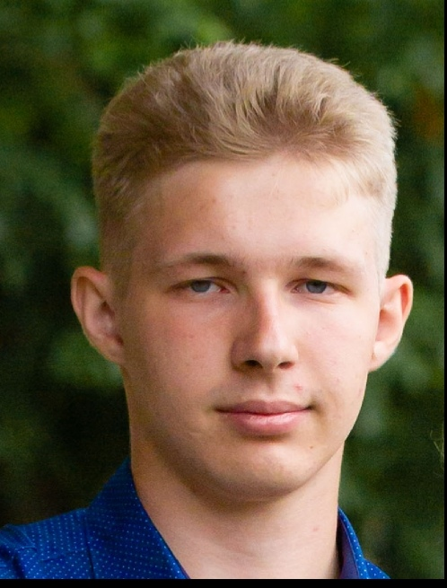

|
|
Саяпин Никита Александрович

-
Обожаю учить разные языки программирования, умею играть на гитаре.
-
10–21 июля Университет Национальной технологической инициативы
«20.35» провел свой первый интенсив на острове Русский. В мероприятии
приняло участие более 1000 человек – лидеров технологического развития
России. Организаторы: Университет НТИ «20.35» АСИ, РВК, АНО «Цифровая
экономика», ДВФУ.
-
Участниками мероприятия стали и самые продвинутые старшеклассники
России, выросшие в Кружковом движении НТИ, прошедшие сеть «Кванториумов»,
«Сириуса», Олимпиады НТИ и аналогичных программ. Здесь они подняли свой
уровень владения технологиями, получили представление о глобальных вызовах
и отечественных разработках, познакомились с учеными и сотрудниками
лабораторий из ведущих, в том числе зарубежных, университетов и компаний,
работающих в области цифровой экономики.
-
Основные направления на «Острове 10–21»: работа с большими данными,
искусственным интеллектом, системами распределенного реестра, новыми и
портативными источниками энергии, нейротехнологиями, VR/AR, сенсорикой
и компонентами робототехники.
-
Отбор участников был непростым. Использовались даже наработки Олимпийского
комитета России по подготовке чемпионов, так как одной из целей проекта
было научить за полторы недели тому, на что обычно уходит несколько месяцев.
Успешно пройдя конкурс анкет, тестов и интервью, участником этой программы
стал воспитанник Детского научно–образовательного центра БГПУ, ныне ученик
11 класса Гимназии №1 Никита Саяпин.
|
|